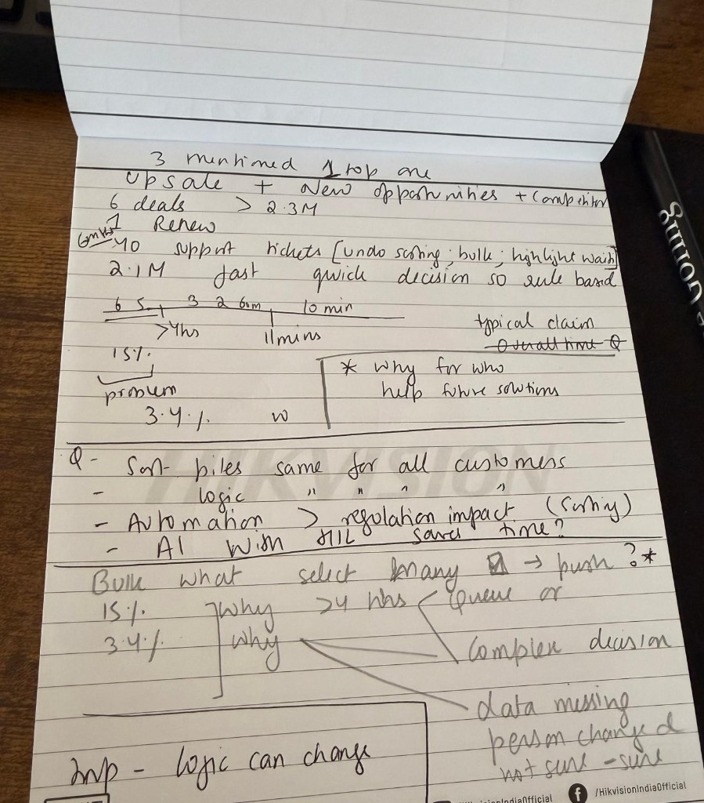

Starting Point
Read the problem
My first pass.

Then created a skill file in Cursor with the points below, to refer to each time I am building the solution.
Understand the customer
- Who is the customer? The insurer buying Keelwater, the handler using it all day, and the person waiting to be paid.
- Customer pain: why sorting? Speed, handler time, a standard for what belongs in which pile (sorting logic), slow claim settlement time.
- Criteria for sorting: is it based on the information in the claim? Is it a standard or interpreted manually by each handler?
- Why do claims change piles? Information arrives late, or questions are answered after the first sort.
- Does each customer have its own sorting logic?
Commercial pressure
- Sales says it is blocking deals: a sales opportunity.
- Customer Success says it is hurting accounts: a retention risk.
- Every customer matters.
- Support is impacted.
- Risk of losing customers to a competitor.
Data
- Keelwater customers sorted 2.1M claims in the last 12 months.
- Median time to sort is 11 minutes. Is it the same for the customers asking for automation, and what does good look like?
- 15% of claims (about 315,000) take more than 4 hours to sort.
- 3.4% of claims (about 71,400) move to a different pile within 30 days.
- These are the claims that would benefit. What does that mean in time saved and value added?
Regulation
- Which decisions about a claim must be explained to the customer and the regulator, and does the sorting logic matter in that? For example, a claim delayed because our logic said it was not high priority.
- My interpretation of what they might ask: "Why was my claim held for investigation when a similar one was paid quickly?" or "Show us the criteria that put this claim in the suspicious pile, and whether a person or a system applied them."
- Risk level: how much automation, what regulation applies, and is a human in the loop?
Existing work
- Bulk sorting ships in 6 weeks: do I keep it or stop it?
- How is a new approach different from the old prototype, based on what new information, and what can AI do now that it could not 18 months ago?
Team
- We have a designer: what does that mean for how we build (SDLC impact)?
Metrics
- Claim handling time.
- How fast people get paid.
- AI evals.